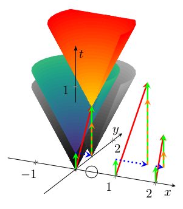

Classical physics is based on the Newtonian idea that space and time are absolute so everything happens simultaneously. Moreover, their observationis also instantaneous. Consequently, when their objects interact, it must be instantaneous; in other words, all interactions have the same (and, logically: infinitely high) speed. Furthermore, electromagnetic waves with the same high (logically, infinitely high) speed inform the observer. This self-consistent abstraction enables us to provide a ”nice” mathematical description of nature in various phenomena: the classic science. In the first year of college, we learned that the idea resulted in ”nice” reciprocal square dependencies, Kepler’s and Coulomb’s laws. We discussed that the macroscopic phenomenon ”current” is implemented at the microscopic level by transferring (in different forms) discrete charge, and that movement of charges has no effect on the environment. Furthermore, that without charge (and, without atomic charge carriers), neither potential nor current exists. In the next semester, we learned that the speed of light is finite and that solids show a macroscopic behavior ”resistance” against forwarding microscopic charges. One semester later, we learned that nature behaves differently at high speeds, at low sizes and energies; furthermore, that the transition between the continuous and discrete views needs new concepts.
In biology, it was evident that the transfer (conduction) time must be considered together with the computing (synaptic) time (in this sense, presynaptic to postsynaptic transmission time). The name ”spatiotemporal” and a (separated) time dependence is commonly used [21], in the sense that Precise Firing Sequence (PFS) ”tended to be correlated with the animal’s behavior”; furthermore, that ”the results suggest that relevant information is carried by the fine temporal structure of cortical activity” [50]. The ”neural dynamics” was studied and ”spatiotemporal spreading of population activity was mapped” [51] by methods used to describe the static computing methods: interspike intervals histograms, auto-correlation and cross-correlation. Because of the peculiarities of this information handling, there are severe doubts whether the notions of the classic neural information theory are valid for biological computing systems [52]. The correct method of describing biological computation is still missing, given that the significant item of the computing is missed: the time and position are connected through the information transfer speed (called conduction velocity).

In Fig. 5.1, for visibility, two spatial and one temporal coordinate are shown. In the following figures, some illustration enable to omit one more spatial dimension, i.e., effectively to draw the events as a two-dimensional diagram.